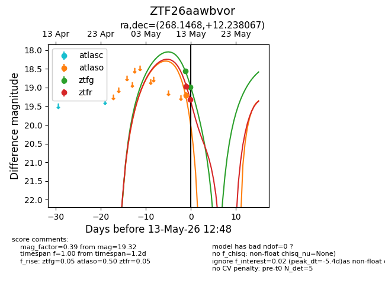
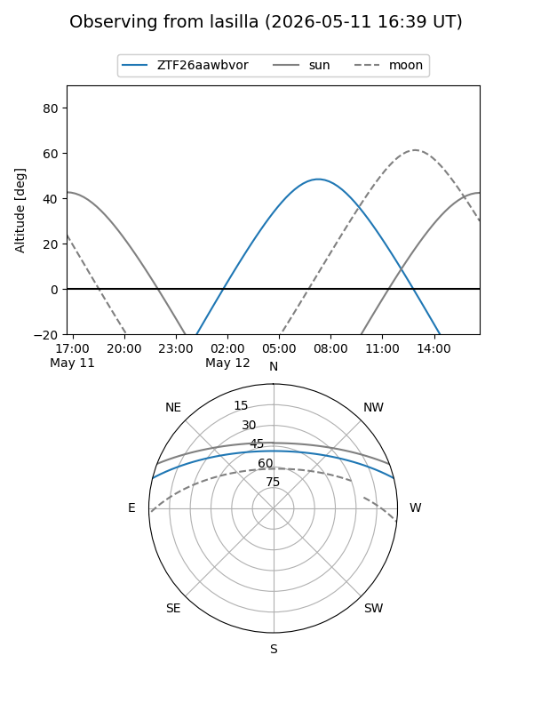
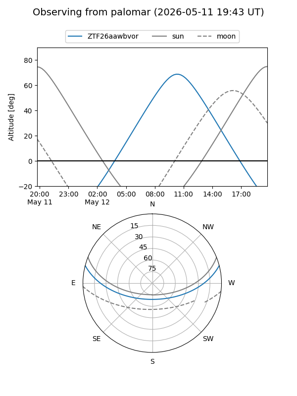

ZTF26aawbvor
Target ZTF26aawbvor at 2026-05-13 12:50
Aliases and brokers:
FINK: link
Lasair: link
ALeRCE: link
alt names
ZTF26aawbvor (ztf,fink_ztf)
Coordinates:
equatorial (ra, dec) = 268.1468,+12.23807
equatorial (HMS+DMS) = 17:52:35.24,+12:14:17.04
galactic (l, b) = (37.4975,+18.51495)
Flags:
Photometry:
last atlaso=19.20, ztfg=18.99, ztfr=19.32
1 atlaso, 2 ztfg, 2 ztfr detections
Lightcurve

Visibility


Additional plots